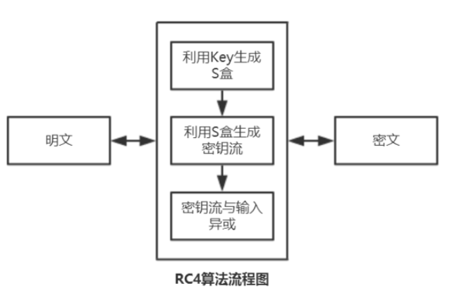
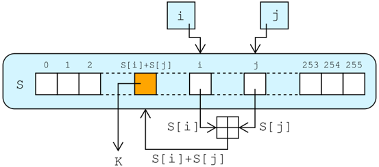

RC4
简介
RC4是一种流加密算法，密钥长度可变。它加解密使用相同的密钥，因此也属于对称加密算法。
原理
RC4算法的原理很简单，包括初始化算法（KSA）和伪随机子密码生成算法（PRGA)两大部分。
算法流程图

1.利用key生成S盒（KSA）
假设S-box的长度为256，密钥长度为Len，先初始化向量S（256个字节），按照升序，给每个字节赋值0,1,2,3,4,5,6…..,254,255。
伪代码
for i from 0 to 255
S[i] := i
endfor
j := 0
for i from 0 to 255
j := (j + S[i] + key[i mod keylength]) mod 256
swap values of S[i] and S[j]
endfor
2.利用S盒生成密钥流
密钥流的生成如下图所示

循环体中每收到一个字节，a 和 b 定位S盒中的一个元素，并与输入字节异或，得到密文 k；同时，c 还改变了 S 盒。由于异或运算的特性，使得加密与解密过程一致。如果输入的是明文，输出的就是密文；如果输入的是密文，输出的就是明文。
伪代码如下
i := 0
j := 0
while GeneratingOutput:
i := (i + 1) mod 256 // a
j := (j + S[i]) mod 256 // b
swap values of S[i] and S[j] // c
K := inputByte ^ S[(S[i] + S[j]) mod 256] // d
output K
endwhile
3.密钥流与输入异或
这一步很简单，直接逐字节异或就行。
python实现
from binascii import*
def KSA(key):
keyLength = len(key)
S = list(range(256))
j = 0
for i in range(256):
j = (j + S[i] + key[i % keyLength]) % 256
S[i], S[j] = S[j], S[i]
return S
def PRGA(S,Len):
i = 0
j = 0
keystream = []
for _ in range(Len):
i = (i+1)%256
j = (j+S[i]) %256
S[i],S[j] = S[j],S[i]
k = S[(S[i]+S[j])%256]
keystream.append(k)
return keystream
def Xor(plaintext,keystream):
c = ''
for i in range(len(plaintext)):
c += chr(ord(plaintext[i]) ^ keystream[i])
return c
def RC4(key,plaintext):
key = [ord(c) for c in key]
S = KSA(key)
keystream = PRGA(S,len(plaintext))
c = Xor(plaintext,keystream)
return str2byte(c).decode()
def str2byte(c):
re = b''
for i in c:
re += b'%02x'%ord(i)
return re
def byte2str(c):
re = ''
for i in c:
re += chr(i)
return re
if __name__ == '__main__':
choice = 0
key ='Key'
if choice == 0:
plaintext = 'Plaintext'
c = RC4(key,plaintext)
print('密文====>'+c)
elif choice ==1:
c = b'bbf316e8d940af0ad3'
c = byte2str(unhexlify(c))
m = RC4(key,c)
print('明文====>'+unhexlify(m).decode())
运行结果
密文====>bbf316e8d940af0ad3
明文====>Plaintext